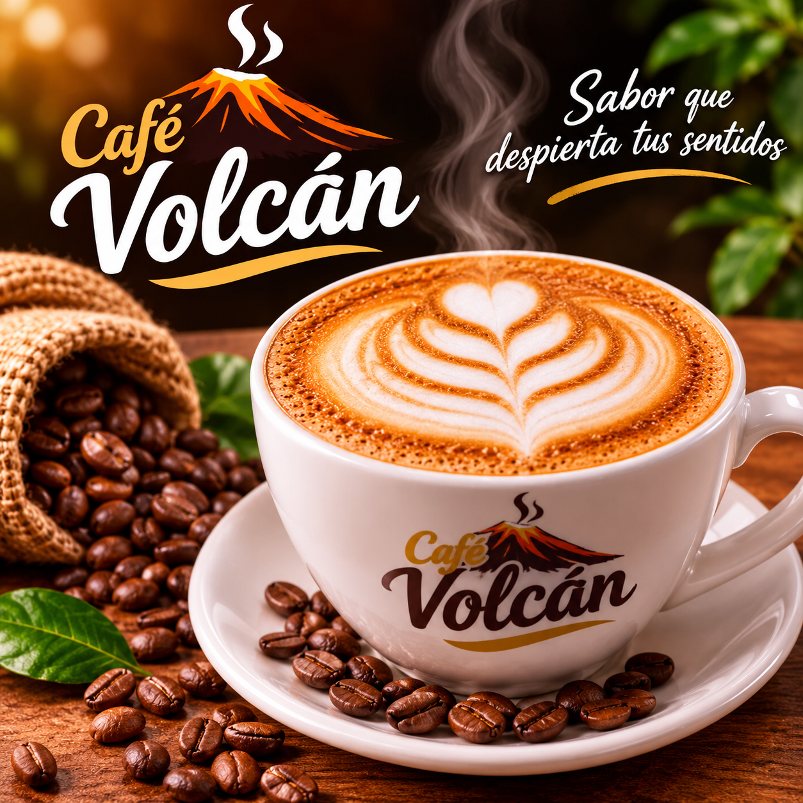

Origen único
Trabajamos con fincas de Boquete y Volcán con trazabilidad completa.
Granos de las faldas del volcán Barú, tostados cada mañana y servidos en una taza que sabe a Chiriquí.

Trabajamos con fincas de Boquete y Volcán con trazabilidad completa.
Tostamos en pequeños lotes para que cada taza llegue fresca.
Pan de yuca, hojaldras y desayunos panameños hechos al momento.